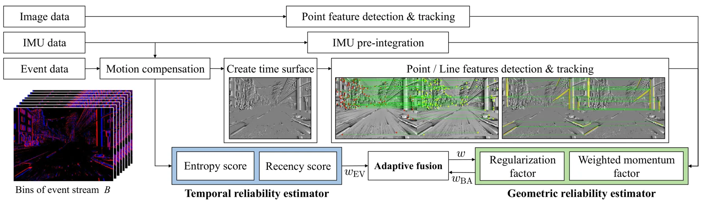
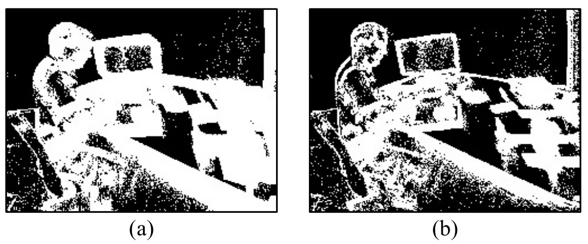
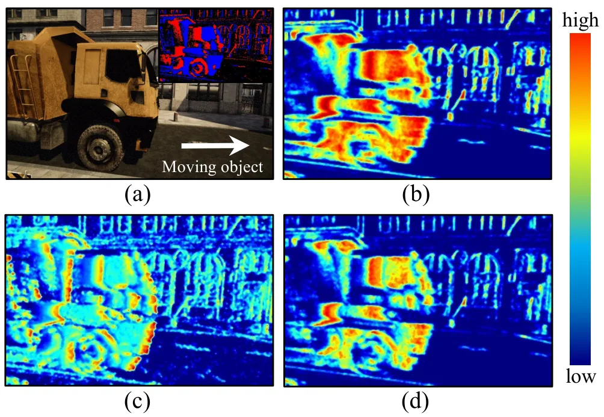
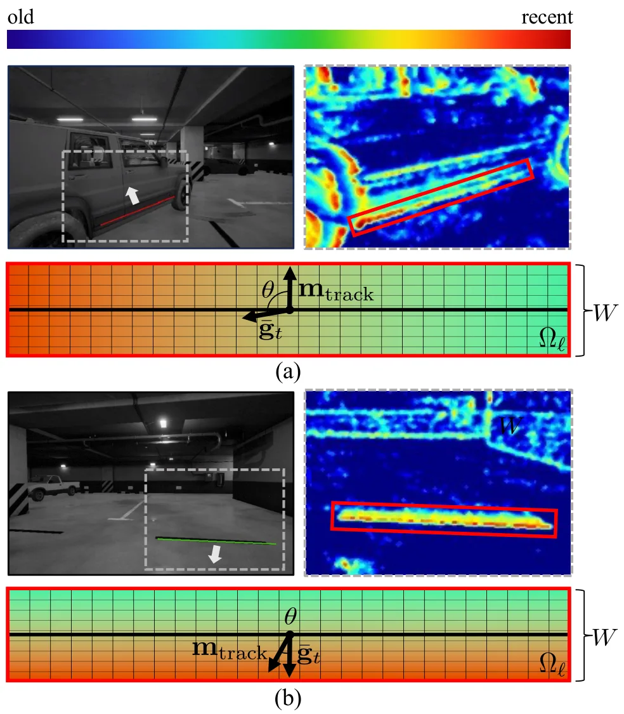
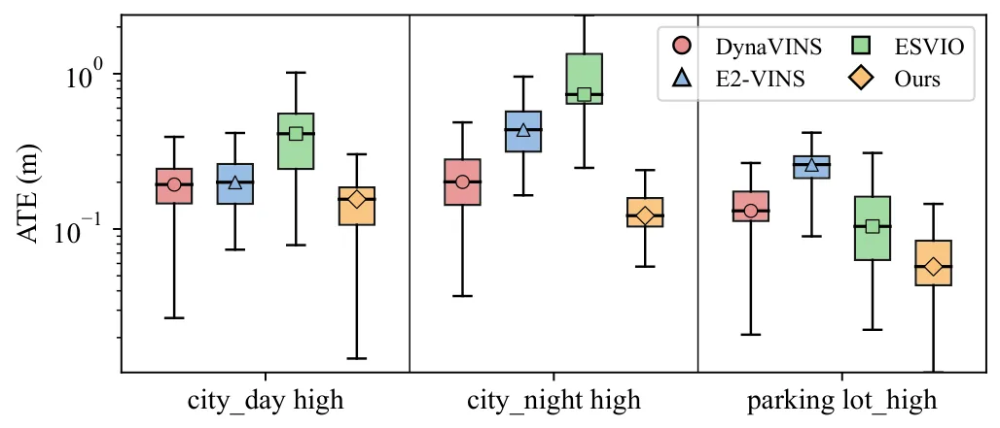
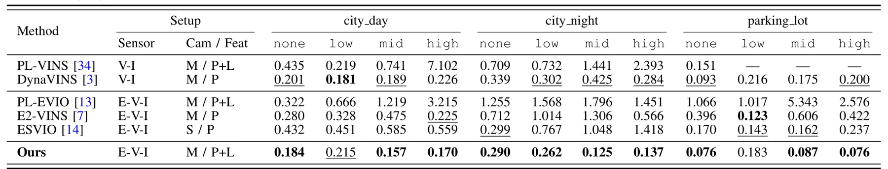
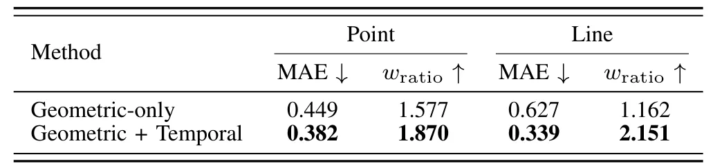

PLED-VINS：面向动态环境的点线事件视觉惯性 SLAMPLED-VINS: A Point-Line Event-Based Visual Inertial SLAM for Dynamic Environments
直接命中 event-based VINS、动态环境、点线特征和鲁棒 BA；适合 SLAM 前端可靠性建模跟踪。需关注真实动态数据规模、与现有事件 VIO 的公平对比和代码开放情况。
一句话工作总结
用时间统计和几何 BA 残差联合评估事件点线特征可靠性，提升动态环境下 VINS 稳定性。
摘要
PLED-VINS 是一个单目事件相机视觉惯性 SLAM 框架，面向动态环境中移动物体和快速运动导致的状态估计退化。方法为点和线事件特征构建 entropy-recency score map 以刻画时间可靠性，同时通过统一的点线鲁棒 bundle adjustment 估计几何可靠性，再用自适应加权策略融合时间与几何可靠性，并对线特征加入运动条件可靠性建模，以降低不可靠观测对状态估计的影响。
Dynamic environments remain a fundamental challenge for visual SLAM, where unreliable observations from moving objects and rapid motion degrade state estimation accuracy. Although event cameras preserve fine-grained spatio-temporal information, most existing event-based SLAM frameworks still assume static scenes and lack approaches to estimate the reliability of features. To this end, we propose PLED-VINS, a monocular event camera-based visual-inertial SLAM framework that enables robust state estimation in dynamic environments. We propose an entropy-recency score map to characterize the temporal reliability of both point and line features based on event temporal statistics. Concurrently, geometric reliability is estimated via a unified point-line robust bundle adjustment. Building upon these, we design an adaptive weighting strategy that fuses temporal and geometric reliability, including motion-conditioned reliability modeling for line features, to suppress unreliable observations. Experimental results demonstrate that PLED-VINS improves state estimation on the evaluated dynamic sequences with moving objects.
中文解读摘录
- 链接：https://arxiv.org/abs/2607.07374 ｜ PDF：https://arxiv.org/pdf/2607.07374
- 中文题名：PLED-VINS：面向动态环境的点线事件视觉惯性 SLAM
- 关键信息：IROS 2026 接收论文。使用单目事件相机与 IMU，在点和线特征上构建 entropy-recency score map 表征时间可靠性，并通过统一点线鲁棒 bundle adjustment 估计几何可靠性，再自适应融合两类可靠性以抑制动态物体观测。
- 为什么值得看：事件相机 SLAM/VIO 在高速和高动态范围场景中有优势，但动态物体下的特征可靠性仍是短板；这篇把 point-line、时间统计和 BA 残差放到统一加权框架中。
- 需要核查：事件点/线提取与 IMU 预积分细节、动态物体比例升高时的鲁棒核与权重退化、与 ESVIO/UltimateSLAM/Event-aided VINS 的真实数据对比，以及代码/数据是否开放。
图表/页面预览

{kind=link}

{kind=link}

{kind=link}

{kind=link}

{kind=link}

{kind=link}

{kind=link}
